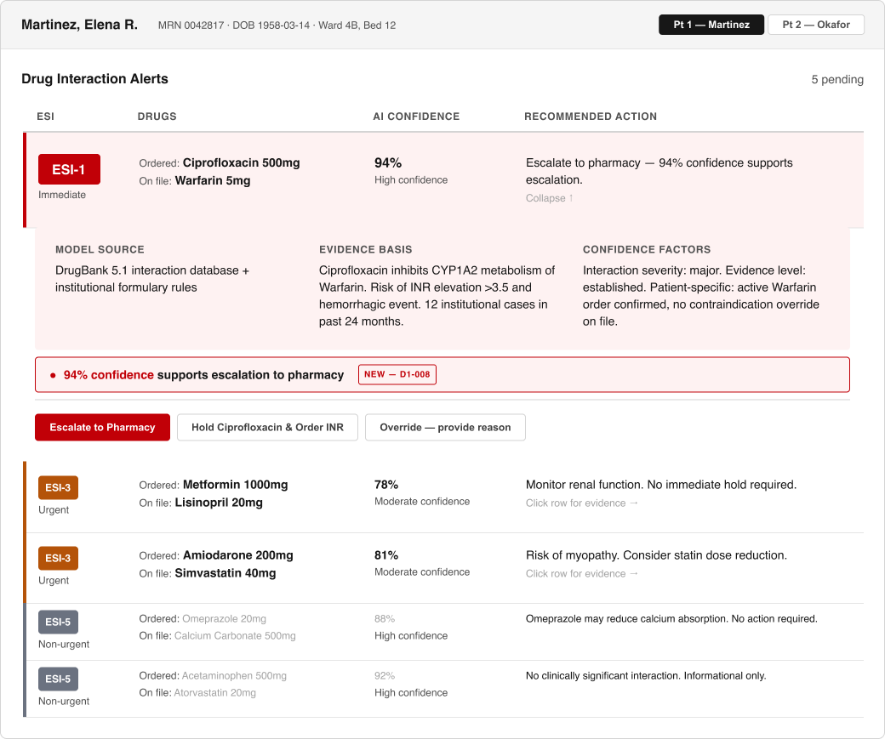

UX / Product Design
Hospitalists override an overwhelming number of critical drug-interaction alerts due to alert fatigue caused by an overload of critical alerts that don't differentiate themselves enough. I designed an alert system with a clear severity hierarchy, AI confidence, and recommended action, readable at a glance. (Bryant et al., 2014)

The Round 2 fix pictured above (Escalate styled as the primary action, with a stated confidence recommendation). The Round 1 design (Hold styled as primary) is documented in the case study.
Round 1 testing (n=3 RN proxy testers): 100% correctly triaged the critical alert, but 0% chose Escalate once AI confidence was shown. Round 2 (n=3) partly closed that gap: 33% chose Escalate once the recommendation was stated inline, up from 0%.
8pt grid, semantic tokens, Component/Variant/State naming, auto layout.
Stark-audited, WCAG 2.2 AA minimum, verified before every round of testing.
Synthesized and organized research findings with the help of Claude AI.
Useberry + SUS + NASA-TLX, two rounds, every decision traced to a cited finding.
A Letterboxd redesign built on competitive research, and CivicPulse, a government-transparency app built with Baltimore data.
See all case studies →A logistics platform designed and built solo for a real client: dispatch, chain of custody, AI-assisted contract matching, in daily production use.
See the build →I'm an early-career UX/product designer based in Frederick, MD. I believe that design cannot be done without data as the foundation, strong design starts with strong preparation. I enjoy solving problems, no matter the scope. Exploring new technology such as AI-assisted workflows excites me and the intersection between design and emerging tech.